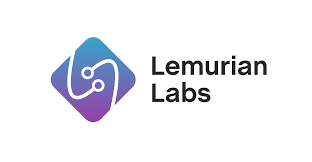
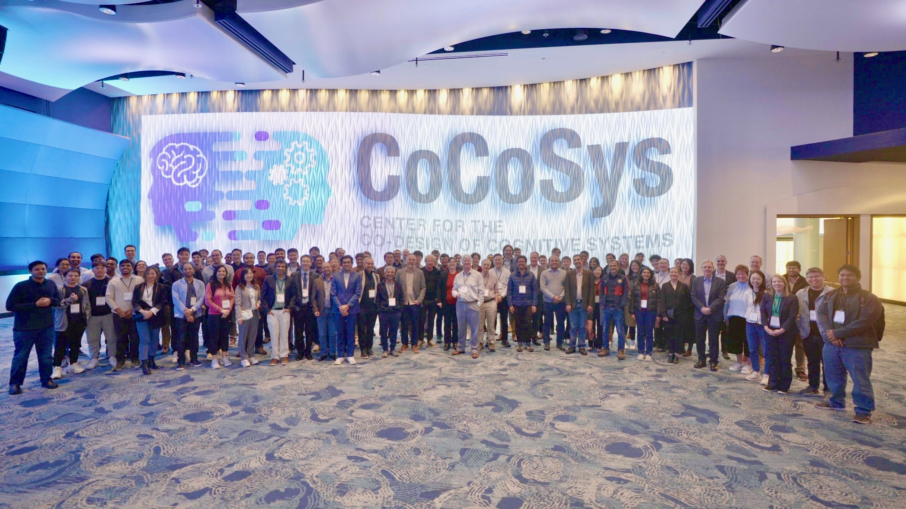
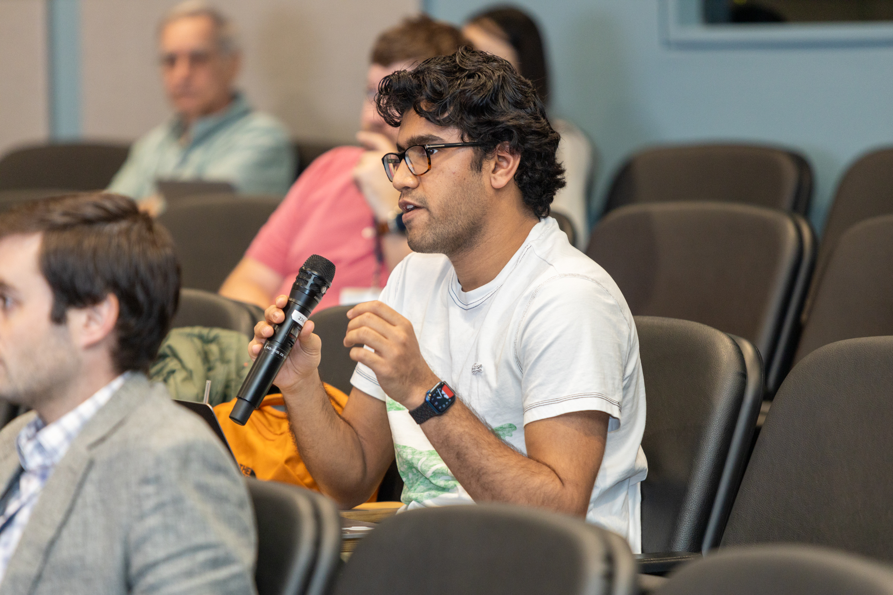
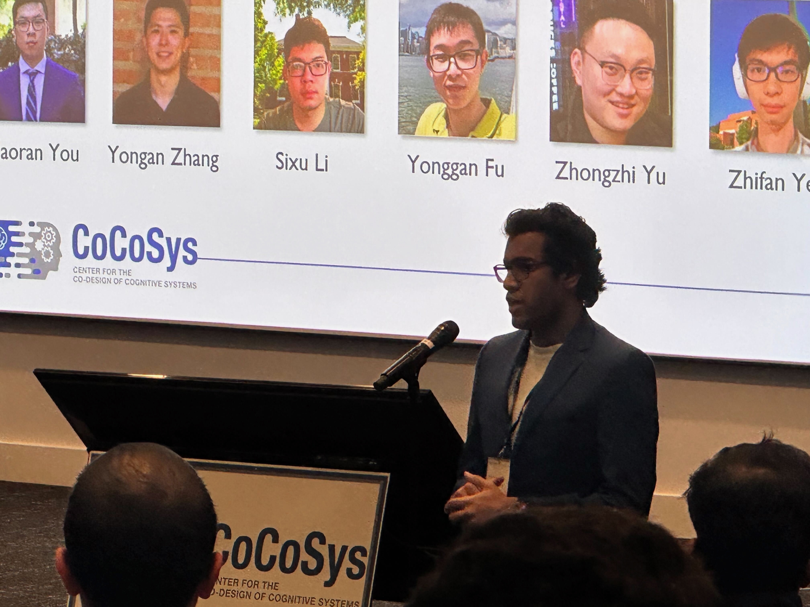
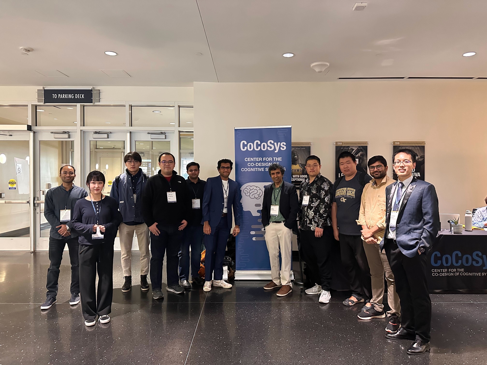
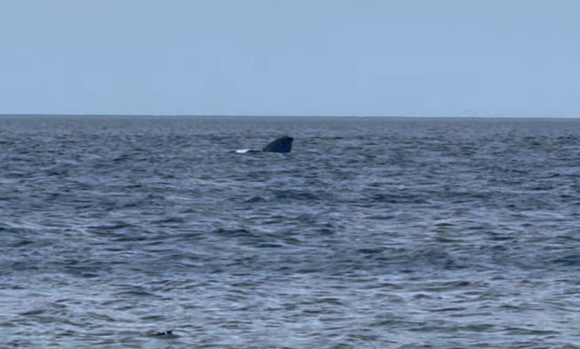
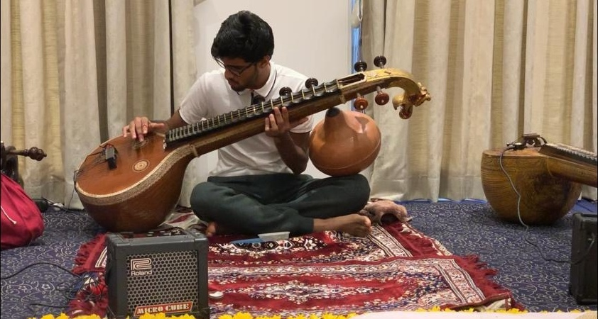
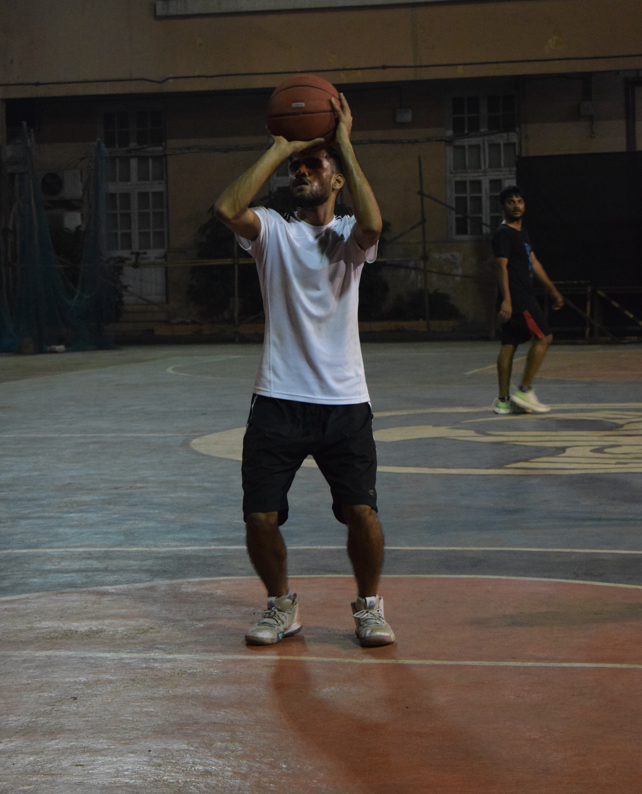

|
Akshat Ramachandran
I am a first-year Ph.D student in Electrical and Computer Engineering (ECE) at the Synergy Lab in the Georgia Institute of Technology (Georgia Tech) advised by Prof. Tushar Krishna.
Google Scholar /
CV /
LinkedIn /
GitHub
|
Email: akshat.r@gatech.edu
|
|
Research Interests
The central focus of my research is in the design and development of efficient and high performance algorithms, architectures and systems for accelerating emergent deep learning applications (computer vision and NLP). My research breaks down traditional barriers existing between different computing elements and adopts an interdisciplinary approach spanning the entire computing stack. To realise my vision of developing the next generation of computing systems, my interests and technical work spans a wide gamut and lies at the intersection of computer architecture, VLSI, computer arithmetic and deep learning.
- Architecture:
- Domain-Specific Architecture for Computer Vision:
[DAC'24]
[DSD'22]
|
|
Publications (Since 2024) (*: Equal Contributions)
|
|
|
Algorithm-Hardware Co-Design of Distribution-Aware Logarithmic-Posit Encodings for Efficient DNN Inference
Akshat Ramachandran,
Zishen Wan,
Geonhwa Jeong,
John Gustafson,
Tushar Krishna
ACM/IEEE Design Automation Conference (DAC), 2024
Paper
We present Logarithmic Posits (LP), a novel adaptive data type for Deep Neural Network (DNN) quantization, offering significant efficiency and accuracy improvements. Our approach, LP Quantization (LPQ), optimizes DNN parameters using a genetic algorithm, closely preserving model accuracy with a specialized objective. The resulting LP accelerator architecture (LPA) doubles performance per area and improves energy efficiency by 2.2x over traditional quantization methods, with minimal accuracy loss.
|
|
Honors and Awards
[2022] Received the Samsung Spot Award for outstanding contribution towards design and development of AR/VR algorithms and acceleration on Samsung Galaxy devices.
[2022]Won the Best Undergraduate Thesis Award in the EE dept. for the senior year thesis on ”Next Generation Architecture for Computer Vision”.
|
|
Experience |
|
NVIDIA, Santa Clara, CA, USA
Architecture Energy Modelling Intern
• May 2024 to Aug 2024
|

|
|
Lemurian Labs, Menlo Park, CA, USA
Hardware Intern (Remote)
• Jun 2023 to Aug 2023
|

|
|
Samsung Research, Suwon, South Korea & Bangalore, India
Visual Intelligence Research Engineer
• Aug 2022 to Jul 2023
|

|
|
Academic Service
- Conference Reviewer: CoNGA'24@SC Asia 24.
|
Activities and Picture Gallery
- Sports: I enjoy basketball, swimming, tennis and table tennis.
- Music: I am a trained veena and violin player. [YouTube]
|
|  CoCoSyS Members |
 Deep Dive Session @ CoCoSyS |
 Lightning Talk @CoCoSyS |
 Synergy Lab@CoCoSyS |
 Hiking @ Long Beach |
 Whale Watching @ Cape Cod |
 Veena |
 State-Level Basketball Tournament |
|
|
{kind=link}